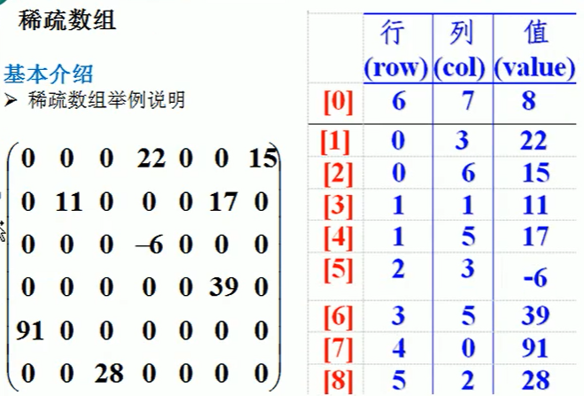
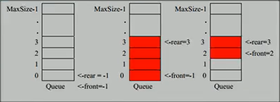

稀疏数组
当一个数组中大部分元素是0，或者为同一个值的数组时，可以用稀疏数组来保存该数组。
稀疏数组的处理方法是：
记录数组一共有几行几列，有多少个不同的值。
把具有不同值的元素的行列和值记录在一个小规模的数组中，从而缩小程序的规模。

代码实现：
1
2
3
4
5
6
7
8
9
10
11
12
13
14
15
16
17
18
19
20
21
22
23
24
25
26
27
28
29
30
31
32
33
34
35
36
37
38
39
40
41
42
43
44
45
46
47
48
49
50
51
52public static void main(String[] args) {
// 定义二维数组
int chessArr[][] = new int[11][11];
chessArr[1][2] = 1;
chessArr[2][3] = 2;
// 遍历二维数组获得非零数据的个数
int sum = 0;
for (int i = 0; i < 11; i++){
for (int j = 0; j < 11; j++){
if(chessArr[i][j] != 0)
sum++;
}
}
// 创建对应的稀疏数组
int sparseArr[][] = new int[sum+1][3];
// 给稀疏数组赋值
sparseArr[0][0] = 11;
sparseArr[0][1] = 11;
sparseArr[0][2] = sum;
// 遍历二维数组，将非零值存放到稀疏数组中
int count = 0; // count用于记录是第几个非零数据
for (int i = 0; i < 11; i++){
for (int j = 0; j < 11; j++){
if(chessArr[i][j] != 0){
count++;
sparseArr[count][0] = i;
sparseArr[count][1] = j;
sparseArr[count][2] = chessArr[i][j];
}
}
}
for(int i = 0; i < sparseArr.length; i++){
System.out.printf("%d\t%d\t%d\t\n", sparseArr[i][0], sparseArr[i][1], sparseArr[i][2]);
}
// 稀疏数组恢复成二维数组
int[][] chessArr2 = new int[sparseArr[0][0]][sparseArr[0][1]];
for(int i = 1; i < sparseArr.length; i++){
chessArr2[sparseArr[i][0]][sparseArr[i][1]] = sparseArr[i][2];
}
for (int i = 0; i < 11; i++){
for (int j = 0; j < 11; j++){
System.out.print(chessArr2[i][j] + " ");
}
System.out.println();
}
}
队列
- 队列是一个有序列表，可以用数组或是链表实现。
- 先入先出。
- 
用 maxSize 表示队列的最大容量，front 表示队列元素前一位的下标，rear 表示队列最后一位的下标。
front 随着数据的取出而改变，rear 随着数据加入而改变。
为了解决目前数组使用一次就不能用的问题，使用取模算法改进成一个环形的队列。
环形队列
环形队列中，front指向队列的第一个元素，初始值=0。rear指向队列中最后一个元素的后一个位置，初始值=0。
队列满的条件为：(rear + 1) % maxSize == front
队列空的条件为：rear == front
对类中有效数据的个数：(rear + maxSize - front) % maxSize
我们可以发现无论在哪种队列中，front 和 rear 不能同时指向第一个元素和最后一个元素。这样是因为，在队列中只有一个元素时，避免 front 和 rear 相等，出现无法判断队列空的情况。
代码实现：
1 | package cn.Retur0; |